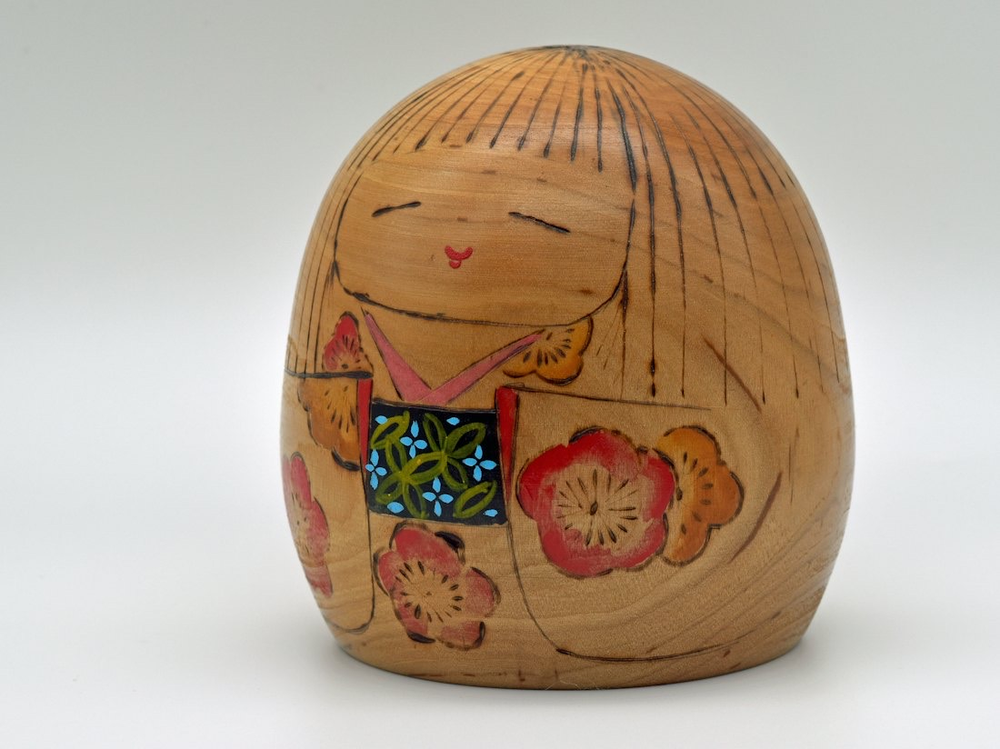
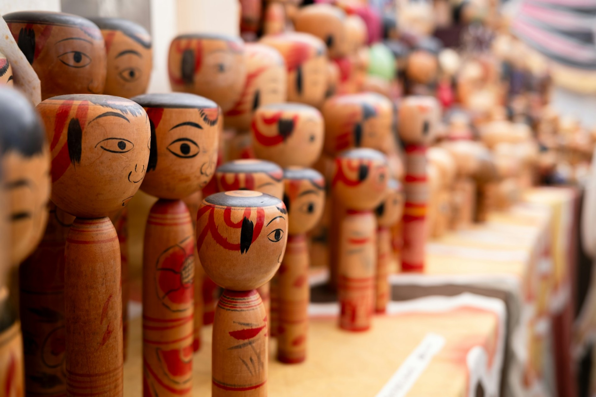
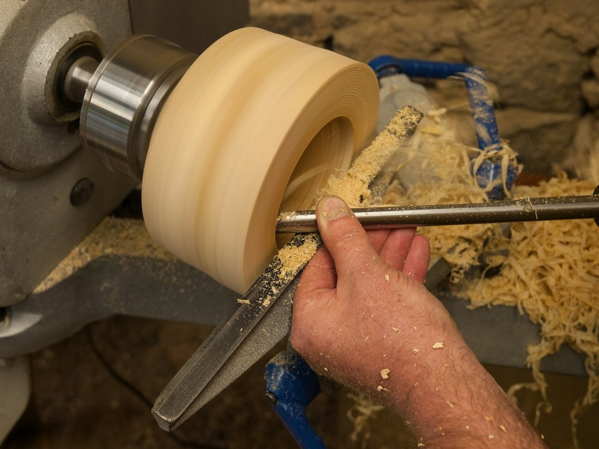
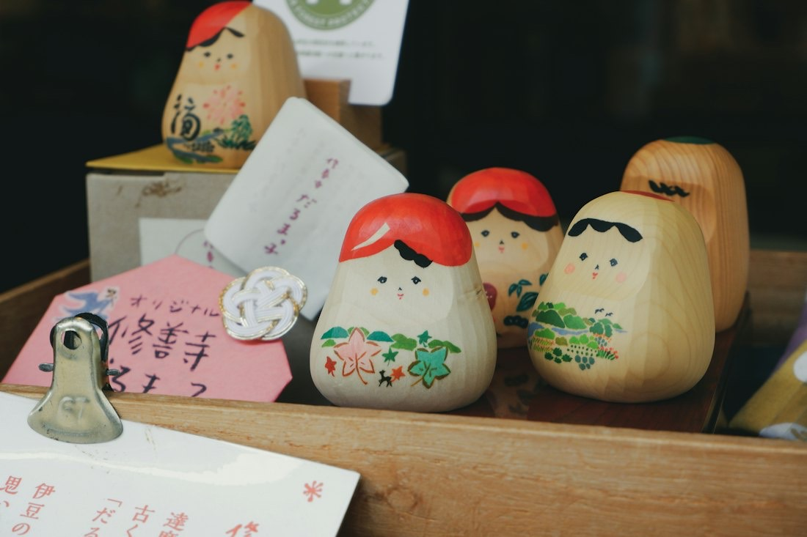
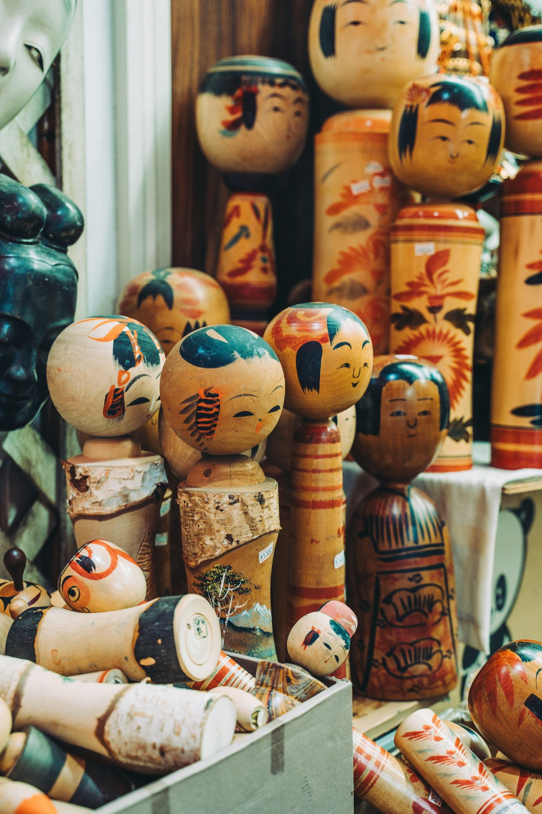

仙臺さすり
倒れにくい丸い体に、笑顔を描いて。

仙台民芸品 仙臺さすり 仙台市青葉区国見ケ丘
丸い体は角がないので「円満」を、地震でも倒れにくい体は「商売繁盛・繁栄」を表します。招いた福を留めておきたいとの願いを込めています。
仙台民芸品 仙臺さすり 仙台市青葉区国見ケ丘
丸い体は角がないので「円満」を、地震でも倒れにくい体は「商売繁盛・繁栄」を表します。招いた福を留めておきたいとの願いを込めています。
仙臺さすり
丸い体は、
円満。
角がないので「円満」を、地震でも倒れにくい体は「商売繁盛・繁栄」を表します。
ドラッグでさする・タップでゆらす福 0
仙臺さすりの3Dイメージです。実際の作品とは異なります
2000年頃、千葉県船橋市の百貨店で展示会を開いた際、お医者様の奥様が私の「こけし」を購入し、その場で体をさすったのがきっかけでした。「この様な木の物で体をさするといいから」と。
震災後、本格的に、倒れずそして「さすって福を招く」ことにこだわった作品を作り始めました。飾ってもよし、手の上でさすってもよし。愛しい人の肩・腰・背中をさすってください。

倒れにくい丸い体に、笑顔を描いて。

30mm×30mm。1,100円（税込）より。

イベント会場で、仙臺さすりの絵付けを体験できます。

| 工房 | 留守にする場合があるので、お越しの際は必ず電話・メール・ラインでご確認ください |
|---|---|
| 主な販売店 | 藤崎百貨店、遠刈田こけし館、仙台うみの杜水族館など |
作品・体験のお問い合わせは、携帯・メールで。